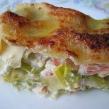

Lasagnes poireaux saumon
Ingredients
6×
- 2 filets de saumon
- 6 blancs de poireaux
- beurre
- plaques de lasagnes
- 3 tranches de saumon fumé
- béchamel (50cl de lait)
- gruyère râpé
- mozzarella

Préparation
Étape 1
Passer 2 filets de saumon moins d’1min au micro-ondes et les émietter.
Étape 2
Émincer 6 blancs de poireaux et les rissoler dans du beurre jusqu’à ce qu’ils roussissent.
Étape 3
Beurrer un plat et monter les couches : plaques de lasagnes, 3 tranches de saumon fumé, lasagnes, poireaux, lasagnes, saumon émietté nappé de béchamel (50cl de lait), lasagnes.
Étape 4
Verser le reste de béchamel, parsemer de gruyère râpé (et éventuellement de mozzarella). Cuire 30min à 200ºC.